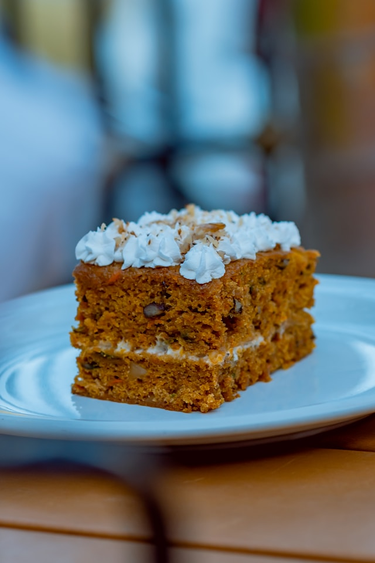

Pumpkin Crunch Cake
(recipe from allrecipes)

Photo by Carlos Rodríguez on Unsplash
Description
This pumpkin crunch cake recipe tastes great and is really easy to make with canned pumpkin and cake mix.
Perfect for fall gatherings and holidays.
Ingredients:
- 1 (15 ounce) can pumpkin puree
- 1 (12 fluid-ounce) can evaporated milk
- 1 ½ cups white sugar
- 4 large eggs
- 2 teaspoons pumpkin pie spice
- 1 teaspoon salt
- 1 (15.25-ounce) package yellow cake mix
- 1 cup chopped pecans
- 1 cup butter, melted
- 1 (8-ounce) container frozen whipped topping (Optional)
Steps:
- Preheat the oven to 350 degrees F (175 degrees C). Lightly grease a 9x13-inch baking pan.
- Combine pumpkin, evaporated milk, sugar, eggs, pumpkin pie spice, and salt in a large bowl; mix well. Spread batter in the prepared pan.
- Sprinkle cake mix over pumpkin batter; pat down gently. Sprinkle chopped pecans evenly over cake; drizzle with butter.
- Bake in the preheated oven until golden, and a toothpick inserted into center comes out clean, 60 to 80 minutes.
- Let cake cool; spread with whipped topping.
Home